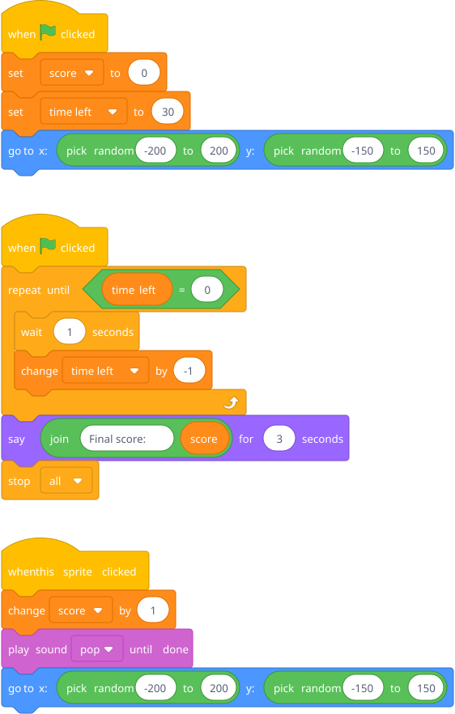

Start with a question: "In your maze game, how would the computer remember your score?" He can't do it with what he knows. Introduce variables as the computer's memory — a labeled box that holds a number.
A sprite appears at random positions, you click it, score goes up by 1, it moves somewhere new. Timer counts down from 30.
Prep: Make or pick a fun sprite (use something with personality — a donut, a bat, whatever he's into).

Blocks to point out: Variables need to be created first — go to Variables category → "Make a Variable" → name it "score". set puts a specific value in the box. change by adds to whatever's already there. The variable shows up on the stage as a display automatically (right-click it to change the display style). There are two separate when green flag clicked scripts — that's fine! They run simultaneously.